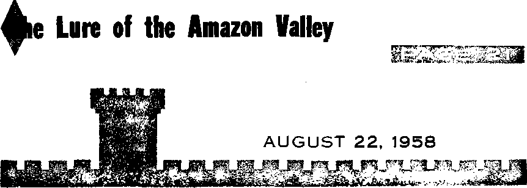

SENO FOR THIS NEW BOOKLET TODAY
♦ Love Practical Among the Nations in Our Time?
Should You Conform?
Infants Are Smarter than You Think
THE MISSION OF THIS JOURNAL
News sources that are able to keep you awake to the vital Issues of our times must be unfettered by censorship and selfish interests. "Awake!" has no fetters. It recognizes facts, faces facts, is free to publish facts. It is not bound by political ambitions or obligations; it Is unhampered by advertisers whose toe* must not be trodden on; it is unprejudiced by traditional creeds. This journal keeps itself free that it may speak freely to you. But it does not abuse its freedom. It maintains integrity to truth.
“Awake!" uses the regular news channels, but are not dependent on them. Its own correspondents are on all continents, in scores of nations. From the four corners of the earth their uncensored, on-the-scenes reports come ta you through these columns. This journal's viewpoint is not narrow, but is international. It is read in many nations, in many languages, by persons of all ages. Through its pages many fields of knowledge pass in review—government, commerce, religion, history, geography, science, social conditions, natural wonders—why, its coverage is as broad as the earth and as high as the heavens.
“Awake!” pledges itself to righteous principles, to exposing hidden foes and subtle dangers, to championing freedom for all, to comforting mourners and strengthening those disheartened by the failures of a delinquent world, reflecting sure hope for the establishment of a righteous New World.
Get acquainted with "Awake!” Keep awake by reading “Awake!”1
M^lttl mH » M ■
Published Semimonthly by
WATCHTOWER BIBLE AND TRACT SOCIETY OF NEW YORK, INC. 117 Adams Street Brooklyn 1, N.Y,, LLS.A.
N, H. Knorr, President Grant Suiter, Secretary
Printing this issue: 2,000,000
Five cents a copy
“Awake!” is published In the following 19 languages; Semimonthly—Afrikaans, Danish, Dutch, English, Finnish, French, German, Greek, Italian, .lapanede, Nujwu* glac, Portusneae, Spanish, Swedish, Tagalog.
Monthly—Cinyanja, Ixiitoncetan, Ukrainian, Kuhl.
Yearly subgcriptiijn rule*
Offices fn-r Semimonthly editions
America, U.S., 117 Adams St., Brooklyn 1, N.Y. $1 Australia, 11 Hercsaford Rd.. Hurstville, N.S.W. S/-
Canada 150 Bridgeland Ave., Toronto 1, Ont. 51 England, 34 Craven Terrace, London W. 2 T/‘
New Zealand, 621 New North Road, Auckland, S.W.1. 1/-South Africa, Private Bag, Krugersdorp, Transvaal 7/-
Monthly will cost half the above mica
Remittances for the current issues should be mat to the otJtee in your country. Otherwise send your remittance to Brooklyn, Notice explretlou is sent at two ifAUCM heti)re subscription expires.
CHANGES OF ADDRESS should with you thirty days before your moving date. Give is yoir old and now address (If passible, yoitr old address label). Write Watchtower, 117 Adams Street, Brooklyn 1. New York, U.S.A,
Entered as second-class matter at Brooklyn Y. Printed In U.S.A.
the Bible translation used in “Awake!” to the New World Translation of the Holy Scriptures. When other translations are used the following symbols will appear behind the citations:
AS — American Standard Version AT — An American Translation AV — Authorised Version (1611) Da - J. N. Darby's version
Dy — Catholic Duuay version JiJjD — The Emphatic Dfaglntt JP - Jewish Publication Society Le — Isaac Lesser's version
jtfo - James Moffatt's versions JfiO — J. B. Rotherham's version AB — Revised Standard Version Yg ” Robert Young'c version
CONTENTS
Is Love Practical Among the Nations in
Infants Are Smarter than You Think 13
Talking Animals, Birds and Bees
“Your Word Is Truth”
Divine Healing and Its Purpose
Jehovah’s Witnesses Preach in All the Earth—Bolivia
I have created off the surface of the ground.’ ” (Gen. 6:5, 7) Ample warning was giv-
_ w THEN morning light Vy filtered through the cloud canopy on the seventeenth day of the second secular month in 2370 B.C. it began a day that would never be forgotten. But for most people living at that time the day began as every other day. They went about their tasks as usual, expecting nothing out of the ordinary. But as the day moved on, a torrential rain commenced falling. Day after day it continued without letup. It flooded their homes, inundated their cities and drove them to the hills. For forty days and nights it fell without a pause. The floodwaters rose to more than twenty-two feet above the highest mountains of that time.
It was no accident, but was deliberate action taken by man’s Creator, Jehovah God. Regarding it the Bible says: “Consequently Jehovah saw that the badness of man had become great in the earth and evei-y inclination of the thoughts of his heart was only bad all the time. So Jehovah said: ‘I am going to wipe men whom en those people, but they scoffed at it.
There is much evidence that a global deluge did take place. What was stated by the apostle Peter is not legend but historical fact: “For, according to their wish, this fact escapes their notice, that there were heavens in ancient times and an earth standing compactly out of water and in the midst of water by the word of God, and by those means the world of that time suffered destruction when it was deluged with water.”—2 Pet. 3:5, 6.
A former head of Yale’s geology department, Benjamin Silliman, once stated: “Respecting the Deluge, there can be but one opinion: geology fully confirms the Scriptural history of the event. ... Whales, sharks, and other fishes, crocodiles and amphibians, the mammoth and the extinct elephant, the rhinoceros, the hippopotamus, hyenas, tigers, deer, horses, the various species of the bovine family and a multitude more, are found buried in diluvium at a greater or less depth; and in most instances under circumstances indicating that they were buried by the same catastrophe which destroyed them: namely a sudden and violent deluge.”
Vast deposits of mixed bones from many kinds of animals have been found buried in clay and gratel and often mixed with sea shells. The deposits are in parts of the earth that are far from where these animals now live. Bones of tropical animals are found in abundance in Siberia.
There are even frozen mammoths buried in Siberian soil whose flesh and hair are in an excellent state of preservation. This is evidence of a cataclysm that suddenly killed these creatures and buried them. The torrential downpour of water during the Flood, accompanied by icy winds in the arctic regions, could easily have been that cataclysm.
Regarding the multitudes of animals known to be buried in Siberia the geologist Henry Howarth said: “When nature puts a term to an animal’s life in her normal way, it is exceedingly seldom she does so when the animal is young. Animals do not die naturally in crowds when young, and yet we find remains of quite young animals abounding in all classes from mammoths to mice. How are we to account for this fact, save by summoning an abnormal cause? How again can we account for the fact that the mummied animals found in Siberia seem to have been in robust health, stout and strong? ... If the remains were the silent chronicles of centuries of time and generations of life we should assuredly have found some or a large portion of the bones would have been gnawed, but this is not the case, and it points strongly to their death having been more or less simultaneous.”
As the Bible states, the Flood destroyed not only humans but untold millions of animals. It mixed animals of many kinds with clay, gravel and some sea life. Great numbers of fish also perished by being entombed in sediment stirred up by the powerful currents of the Flood. Fossilized fish have been found that show clear evidence of having been buried alive.
Those same currents smashed great rock formations and scattered huge boulders from those formations over great distances, mixing them with bones, shells and vegetation. They scooped out from the ocean floors, as well as from land surfaces, enormous canyons that remain until this day. .
Only eight humans survived the destruction of the world that was. They had maintained their integrity to man’s Creator while living in a world that had forsaken him. They exercised faith even though the promised destruction of that world was long in coming. “By faith Noah, after being given divine warning of things not yet beheld, showed godly fear and constructed an ark for the saving of his household, and through this faith he condemned the world.”—Heb. 11:7.
The present world does not have his faith, but manifests the same disregard for Jehovah God as the world before the Flood did. His laws are ignored, his purposes for earth are ridiculed and his written Word is belittled. What happened to the world that was prophetically pictures the destruction due to come upon the present world. This modem generation may scoff at the warning of “the war of the great day of God the Almighty,” called Armageddon, but as the Flood came on the day marked for it, so will the battle of Armageddon. On that day Jehovah God will war against this corrupt world and its wicked invisible ruler, bringing the entire system of things to an end. Only obedient ones who heed the warning of Armageddon will survive.
PRACTICAL AMONG THE NATIONS IN OUR TIME?
can love maintain peace and prevent war ?
What example do we have of love's practibility ?
HROUGHOUT human history every positive step toward an ever fuller, purer, richer life has been inspired by love. Love is the very essence of truth, goodness, beauty and freedom. It reaches to the very origin of life. It is the very foundation of the universe, for “God is love.*’ Men who wish to derive the greatest good out of life must love, as the apostle John declared: “If we continue loving one another, God remains in us and his love is made perfect in us.”—1 John ,4:16, 12.-
In the centuries before Christ righteous men acknowledged Jehovah God as the Source of genuine love. King David wrote: “How precious your loving-kindness is, O God! And in the shadow of your wings the sons of men themselves take refuge. They drink their fill of the fatness of your house, and of the torrent of your pleasures you cause them to drink. For with you is the source of life; by light from you we can see light." Here we read of the unshakable conviction that God’s love knows and meets every human need and wipes away all anxieties of life. His love does not afflict, restrict or discriminate, but embraces all the universe with constant, tender and loving care. His love brings peace and provides men with the sense of lawful security. As a loving Father he not only provides for them materially but also feeds his people with bread from heaven, clothes them with the garment of holiness and strengthens them with the power of his spirit and the vitality of life.—Ps. 36:7-9.
Recognizing love as a practical motive in life, men of God have looked forward to the time when peoples would respond to God’s judgments and love and “beat their swords into plowshares, and their spears into pruning-hooks," when “nation shall not lift up sword against nation, neither shall they learn war any more,” They have taught that men are required “to do justly, and to love kindness, and to walk humbly" with their God; that a family, a community or a nation cannot be held together for long unless it loves. —Isa. 2:4; Mic. 6:8, AS.
Jesus Christ more than any other creature taught and demonstrated the practicability of love. He taught that the greatest commandment is: "Love Jehovah your God with your whole heart and with your whole soul and with your whole mind.” He showed that love would cause his followers to behave differently from the world. They would not resist the wicked. When slapped, they would turn the other cheek. When pressed into service for a mile, they would go two. To everyone asking they would give, and they would not turn away from one that wanted to borrow without interest. They would even love their enemies and pray for those persecuting them.—Matt. 22:37, 38; 5:39-48.
Further, Jesus counseled men to leave their gifts in front of the altar, and first to make their peace with their brothers,
and then, when they have come hack, offer up their gifts. This reconciliation was itself the best prayer: “For if you forgive men their trespasses, your heavenly Father will also forgive you,” and he will not do so otherwise. In their relationship with men, Jesus urged his followers to imitate God: “You must accordingly be complete, as your heavenly Father is complete.”—Matt. 6:14; 5:48.
Love was also taught by the disciples of Jesus Christ. Paul wrote: “Clothe yourselves with the tender affections of compassion, kindness, lowliness of mind, mildness, and longsuffering. Continue putting up with one another and forgiving one another freely if anyone has a cause for complaint against another. Even as Jehovah freely forgave you, so do you also. But, besides all these things, clothe yourselves with love, for it is a perfect bond of union.” —Col. 3:12-14.
Men have long recommended love as a practical solution to the world’s problems, yet no worldly nation has practiced it. In the face of guided missiles and hydrogen bombs, is love practical among the nations in our time? Can love achieve important social reforms and constructive changes? Can it compete with the social reconstructions inspired by hate and carried on by means of violent struggle of clashing parties? The answer is an unequivocal yes! Love will triumph in every instance where hate and force have failed.
The Power of Love to Transform
Love subdues enmity, aggression and hate. Love influences human behavior. It is the prerequisite of eternal harmony. Love inspires love, as hate begets hate. The sociologists have found in love the answer to juvenile delinquency; the criminologists say it is the answer to crime. The psychiatrists have finally concluded that the cause of mental illness is lovelessness. The political scientists have found love the answer to war. This, however, is not the love we see on the television and movie screens of the world or the type depicted in the best-selling novels of our day; rather, it is the love Jesus spoke about in his sermon on the mount.
Dr. Pitirim A. Sorokin, in his book The Ways and Power of Love, writes: “Unselfish love has enormous creative and therapeutic potentialities, far greater than most people think. Love is a life-giving force, necessary for physical, mental, and moral health.” He further states: “Children deprived of love tend to become vitally, morally, and socially defective. Love is the most powerful antidote against criminal, morbid, and suicidal tendencies; against hate, fear, and psychoneuroses. It is an indispensable condition for deep and lasting happiness.” In light of this we ask, Is love practical today? Of course it is. Love is forever practical. “Love never fails.” —1 Cor. 13:8.
“Being loved by others and loving others seems to be as important a single factor of vitality as any other,” says Sorokin. It is also an important factor in good health and longevity. This authority reports that the “main cause of suicide is psychosocial isolation of the individual, his state of being lonely in the human universe, not loving or caring for anybody and not being loved by anybody.” Love’s curative power “remains indispensable for practically all successful therapeutic treatments of mental disorders,” says Sorokin.
Love Can Stop War
Can love prevent war and maintain the peace? Fear and suspicion give way to love and co-operation. When men will come to express the love of God in all their affairs as Christ did, wars will cease, peace will become an established fact, discord will disappear from the earth.
Today men seek to buy peace and security, but these commodities are not to be purchased with one billion or a hundred billion dollars.' Dr. G. Brock Chisholm, director-general of the World Health Organization of the United Nations, stated: “There is only one thing upon which security does depend to the most important degree: unquestionable, all-embracing, obvious love.” He further declared that the future of the world “depends upon the number of mature individuals we can produce, people capable of love.”
U.S. News £ World Report, June 14, 1957, commented editorially: “The greatest achievement of human love is the will and readiness to understand one another. It is the whole basis of the rule of Reason. World peace depends upon it. Internal peace depends upon it. Human happiness in the home depends upon it.” Add to this Sorokin’s statement regarding love’s power to eradicate war and keep the peace and we have conclusive evidence of love’s practicability.
“Finally,” writes Sorokin, “only the power of unbounded love practiced in regard to all human beings can defeat the forces of interhuman strife, and can prevent the pending extermination of man by man on this planet. Without love, no armament, no war, no diplomatic machinations, no coercive police force, no school education, no economic or political measures, not even hydrogen bombs can prevent the pending catastrophe. Only love can accomplish this miracle, providing, however, we know well the nature of love and the efficient ways of its production, accumulation, and use.”
Love practiced in the lives of men would erase wars, revolutions, anxieties and fears. Crime and corruption would vanish away; and so would adultery, divorce and broken homes. A different world would be ours! Is love practical? It most certainly is!
Some might say it is too good to be true, that such teaching is easier said than done. It may be easier said than done, but it is not too good to be true; because those in the New World society of Jehovah’s witnesses are doing it. Their love, first for God and then for their fellow man, has in a practical way in our day enabled them to do away with national, political, racial, traditional and religious barriers and differences. The world over, they live as one family. They do not participate in the worldly bloody wars, but have, in their love for God and neighbor, beaten their swords into plowshares, never to learn war any more.—Mic. 4:3; Ex. 20:13.
Applying the principle of love to their daily living has altered completely their desires, interests, disposition, mental outlook and heart condition. Love has made a change in them for the better. They now look forward to a new world wherein everyone who lives will love. Thus the earth and man upon it will be transformed into a paradise to the glory of God, who is love.—2 Pet. 3:13.
In the volume The Words of Justice Brandeis are recorded these words of the former associate justice of the United States Supreme Court: "I never read anything on the immortality of the soul, and I admit having read but little on the subject, that convinced me of its truth.” The justice could have read much more but still would have been unconvinced, for the truth on the aubject is found in the Bible: “The soul that sinneth, it shall die.”—Ezek. 18:4, AV.
CONFORMITY good or bad? It depends on what one is conform-. Is nonconformity good or bad? That depends on what one is not conforming to. Learning the places for. conformity and nonconformity is vital.
In a previous issue of Awake! we learned that undue conformity breeds mediocrity and acts as a barrier to improvement. Despite a growing recognition of this there is a reluctance to admit that nonconformity has a place. “It is an amusing contra-dicti^'.of xiUT. time,” says The Atlantic
Monthly, "that we do applaud a sort of copybook ,’nonconform-: ity. Everyone laments the increase in con-
one knows that Too much conformity is bad. ... The deadening
effects of overconformity are well understood. Yet, when it comes to the matter of just what kind of nonconformity shall be encouraged, liberality of view recedes. There seems to be no exact place where nonconformity can be fitted in.”1
Understandably, nonconformity has posed a problem. Making more difficult the situation is the confusion of nonconformity with a selfish individualism, the kind that leads to disunity and chaos. "In some societies individualism has been carried to such extremes as to endanger the society itself,” says the volume The Organization Man, “and there exist today examples of individualism corrupted into a narrow egoism which prevents effective co-operation. This is a danger, there is no question of that. But is it today as pressing a danger as the obverse—a climate which inhibits individual initiative and imagination, and the courage to exercise it against group opinion?”
Contributing Something of Value
Nonconformity should contribute something of value. That is its role; that is its place. The something of value may be a new concept in science or art. It may be something more—a moral decision based on a conscience trained in godly principles. That is something of immeasurable value, of value to the individual and of value to society, even though popular opinion may not think so because of its wearing the blindfold of undue conformity.
In this day of a world-wide moral breakdown mere living according to righteous principles may be nonconformity with the crowd. The stopping of immoderate, immoral works and the replacing of them with moderate, moral ones is a contri-
button of value. That nonconformity is good. But it takes courage to be such a nonconformist in the face of abusive speech. Says the Bible of those who quit following the worldly crowd: “For the time that has passed by Is sufficient for you to have worked out the will of the nations when you proceeded in deeds of loose conduct, lusts, excesses with wine, revelries, drinking matches, and idolatries that are without legal restraint. Because you do not continue running with them in this course
to the same low sink of debauchery, they are puzzled
go on speaking abusively of you.” ‘W Pet. 4:3, 4.
Just as making a proper moral decision may involve nonconformity, s o the general improvement in any field of activity may require nonconformity. Writes artist Ben Shahn: “Every great historic change has been based upon nonconformity, has been bought either with the blood or with the reputation of nonconformists. ... To create anything at all in any field, and especially anything of outstanding worth, requires nonconformity, or a want of satisfaction with things as they are.”1
And the book Authority and the Individ ual comments: “Prophets, . . . scientific discoverers, are men whose lives are dominated by a vision. . . . They feel that they cannot obey authority if it runs counter to what they profoundly believe to be good. Although, on this account, they are often persecuted in their own day, they are apt to be, of all men, those to whom posterity pays the highest honor. It is such men who put into the world the things that we most value ... in religion, in art, and in science.”
In science Albert Einstein was a nonconformist. The contributions of his nonconformity were such that he is called “the greatest scientific mind of this and most earlier centuries.”
In religion Christ Jesus was history’s greatest nonconformist. He did not conform to the vain religious doctrines and traditions of his time. He did not retreat from controversiality for fear of men. As one modern clergyman put it, Christ “spent a great deal of time in showing that the greatest religious system the world has ever seen was not bringing the people to God.”2 Christ’s nonconformity exposed falsehood; it contributed something of great value.
So nonconformity has its place. It should not be practiced for the mere sake of nonconformity. Nonconformity has no virtue in itself. It has virtue when it contributes something of value.
Preserving the Values
Conformity also has its own role—it should preserve something of value. If conformity preserves what is wicked, immoral and immoderate, then that conformity is a snare. Not to preserve corruption but to preserve true values—that is the place for conformity.,
CJ
just as he knew the
place for conformity
role of nonconformity. Always Christ’s nonconformity resulted the preservation . of true values. The * laws and command-ttilF'' ments of God—how valuable these are! They are vital for happiness, vital for life. What value there is in the
knowledge of Jehovah God! Said Jesus: “This means everlasting life, their taking in knowledge of you, the only true God, and of the one whom you sent forth, Jesus Christ." (John 17:3) Christ preserved the very greatest of values.
Explaining that he knew the place for conformity, Christ said: ‘1 have not spoken out of my own impulse, but the Father himself that sent me has given me a commandment as to what to tell and what to speak. Also I know that his commandment means everlasting life. Therefore the things I speak, just as the Father has told me them, so I speak them.”—John 12: 49,50.
Conformity in itself, then, should never be viewed as anything bad. Conformity has a place, and if we are to preserve true values we must recognize this fact.
But we must also recognize that undue conformity has perils. Too great a satisfaction with the present state may block true improvement We must reckon with “a curious tendency of human nature. It is the temptation to cling to, romanticize, and perpetuate the familiar, and io view with suspicion and disdain whatever is novel or different.”3 Thus if conformity is too rigid in art or science or in any other human endeavor, if conformity’s eyes are closed to .. then growth may
cease. Writing of this, artist Ben Shahn says in The Atlantic Monthly:
“I do not wish to negate the significance of the conformist himself—or perhaps an apter term would be the conservative. In art, the conservative is the vigorous custodian of the artistic treasures of a civilization, of its established values and its tastes —those of the past and even those present ones which have become accepted.... The conservative . . . holds on to the present, gives stability, and preserves established values. The visionary, always able to see the configuration of the future in present things, presses for change, experiment, and venture into new things. A truly creative artist is inevitably of this part of society. There takes place from time to time an imbalance between the stabilizing and the visionary elements in society. Conformity is then pressed upon everyone, and growth and change and art come to a standstill.”1
True Individualism
Conformity, even all conformity, is sometimes viewed as inhibiting to individual expression, bad for individuality. But true conformity is in no way a barrier to that natural, refreshing variety resulting from the normal operation of individuality. True individuality has a wide range but it is not unlimited. Human freedom cannot be absolute. There must be certain restrictions or guidelines, otherwise the very freedom that is sought would be destroyed. The guidelines provide the boundaries for what is right and normal. Says the volume Science and Freedom: “The technical term Freedom [defines] the social conditions in which there are enough normal choices of behavior patterns open to every person to allow for experiment, and change, and diversity, both in the successive experiences of individual persons and also among different persons in the group.”
An individualism that can find no place for conformity is selfish, unco-operative and an enemy to the very freedom it seeks. “The case for individualism,” says The Scientific Monthly, “has suffered considerably because many of its champions have been of too ‘rugged’ a stripe. They have tended to view any measure which restricts personal liberties as an encroachment upon private rights, regardless of its social merits. . . . No one was ever made free by the simple process of removing all external restraints. . . . When action is separated from intelligence, when it ceases to be a culmination of reflection, when it is en-
gaged in apart from a prior consideration of its consequences, when it is based on insufficient knowledge, such action is shackled by habit, or prejudice, or impulse, or ignorance.”3
Such action, then, is far from being fully free. Selfishness itself is a form of bondage. So true individualism is not a license for acting on bizarre, uncouth and wayward impulses or on selfish whims. “True individualism,” writes George B. Leonard, Jr., in Look magazine, “has little to do with wearing a beard or painting a development house black; it is the ability to love and make moral decisions as an individual.”4
For true individualism to make the right kind of moral decisions there must be conformity to guiding principles. These principles must be righteous.
Where do we find these principles? “It is impossible to enslave mentally or socially a Bible reading people,” once said American journalist Horace Greeley; “The principles of the Bible are the ground-work of human freedom.”5
Nonconformity to the World
For human freedom, for true individualism to survive there must be conformity to the righteous principles found in God's Word, the Bible. One of these principles, interestingly, involves nonconformity to the ways of this wicked world: “Do not be conformed to this world but be transformed by the renewal of your mind, that you may prove what is the will of God, what is good and acceptable and perfect.” —Rom. 12:2, RS.
Here we see the perfect balance between conformity and nonconformity—the conformity that preserves true values and the nonconformity that contributes something of value.
To heed the counsel “Do not be conformed to this world” requires discrimination and selectivity. It almost seems that the art of selectivity these days has been lost. “Tolerance has been expanded to make a virtue of accepting without protest the mediocre and even the mildly unethical,” says the volume The Age of Conformity. “We ate so eager to be tolerant in all things that we tolerate vulgarity, shoddy thinking, blatant self-seeking and even intolerance with resigned self-applause. It is doubtful that the modem policy of ‘live and let live’ is quite the same thing as tolerance, as Christ (who drove moneychangers from the temple) preached it. The word discrimination has been narrowed down to mean only racial intolerance; its earlier meaning of selecting the good and rejecting the bad has been forgotten in practice as well as in definition.”
Look at the flood of bad and worthless printed matter these days! We cannot help but see it, for the newsstands overflow with the trite, the lurid and the sensual. Yet among the maze of reading matter there are some good things, just as there may be found something of value on radio or television. We must be selective in what we look at, in what we listen to, in what we work at.
To avoid conformity to the world actually requires discrimination in all things. The early Christians were even discriminating among laws. Adhering to conformity to the laws of God led them sometimes to nonconformity to the laws of men. The early Christians, though, were not total nonconformists. They conformed to the laws of men; but when a human law conflicted with God’s law, they resolved the conflict in conformity in the manner the apostle Peter spoke of: "We must obey God as ruler rather than men.”—Acts 5:29.
Trained Conscience Decides
To make vital decisions regarding conformity and nonconformity requires a conscience that can discriminate good from bad. Speaking of such a conscience trained by Bible principles, the noted American educator Everett Dean Martin wrote in his work Liberty:
“The Christian , . . has an inner criterion. ... He has made the will and purpose of God his own, and in certain situations he must obey God rather than men. Think what that means for the individual! . . . It has meant that the Christian has felt himself perfectly justified in disobedience of law and authority when such have been in conflict with the Christian conscience. . . . Conscience is not to be judged by the law; it judges the law. Both Socrates and Aristotle condemned certain laws of their time as foolish. But Christianity goes further: it makes disobedience of the law under certain circumstances a moral duty. ... It is no argument to a Christian to tell him that he has a moral obligation to obey law simply because it is law. To him there is always something above the law. To him all laws are not equally binding morally. He is under the spiritual necessity of discriminating among laws and this necessity is a primary moral obligation upon even the humblest child of God.”
There is a paradox about the human conscience: It is free only when it conforms; for, as educator Martin continues: “Conscience is not free in itself, not free by its own nature, nor by human wisdom. ... It is free only when acting in conformity with the law of God. . . . Christian liberty is therefore obedience, submission to the authority of divine revelation.... Thus the Christian, in placing his conscience above the law, does not place all consciences above it, not even his own by natural right or by reason. , , . Conscience is free, but it need enter on no more voyages of discovery, it need only keep the Commandments and fear God, for this is the whole duty of man."
So God gave man a relative freedom; yet it is one large and roomy enough to give us ample room to be ourselves, to express our own personality. Being different for purposes of self-glory, however, is not in harmony with the trained Christian conscience.
There is no place for nonconformity unless it contributes something of value: a nonconformity that contributes disunity, strife and chaos instead of values is out of place. There is no place for conformity unless it preserves something of value: a conformity that preserves the worthless, the evil and the unscriptural practices is out of place.
But how to decide whether nonconformity’s contribution is chaos or value? Again Bible principles determine this; and when there is no specific reference to the contribution, then the principle applies: “Let your reasonableness become known to all men.”—Phil. 4:5.
Conforming to the arrangement set down by God’s Word works for man’s own blessing. That Word sets forth principles for the private and public life of Christians; it sets forth principles for the organizational life of Christians. To these you should conform.
References
t The Atlantic Monthly September, 1957.
* I[. R. L. Sheppard, if I were Dictator.
a The Monthly, January, 1954.
< Look. February 18, 1958.
n The New Dictionary of p. 48.
THlHWR&SWSmS
The world has an annual total of more than 16 million thunderstorms, with 2,000 or more in progress at any time. Every second the sky is lit by a hundred lightning flashes.—Our Astonishing Atmosphere.
1 NF ANTS can be very adult at times and they are not nearly as helpless as they would have you believe, or as you might think. In fact, a mother generally gets her first big surprise when she comes to realize that her baby has been gently and very cleverly teaching her his daily needs. Of course, he does this instinctively. Nevertheless, there are times when baby actually assumes the role of a teacher and his mother becomes his star pupil.
For example, baby has his likes and dislikes the same as we all have, but how can he get his mother to understand what these are? He does this in a superb fashion. His approach is baby language, which at times is very eloquent indeed. Few mothers fail the test. A yelp from baby ifi enough to bring mother running. His shrill, spinetingling shrieks would make him easy to find in a crowd of a hundred thousand people. Baby’s mild whimpers and his vigorous cries, his fusses and squabbles, are his ways of instructing mother how to understand
him and problems ter.
his bet-
you
suit-
Suppose were to feed him a formula that was a little too hot. He would warn you by crying. It is not always necessary for him to burn his tongue or taste his food to know whether it is able or not. Just a passing sniff is enough to let him know that. Newborn baby’s senses of taste and smell are very keen and the slightest whiff from afar will delight or disappoint him. Therefore, it would be well for mother to learn her baby’s preferences and how to favor them. If you will observe him closely, he will teach you what these are. If he is happy during mealtime, it is a good sign that you have struck upon the right formula. But if baby puckers up and whimpers when it is time to feed, his fussing is a good indication that you have not yet learned what foods he likes best. The little one is capable of instructing you of his needs if you will let him. He will even indicate what size
cup or glass he enjoys drinking out of and a hundred other things that go to make him happy.
Just because baby is tiny do not think that he can be easily deceived, because he cannot. Infants just a few hours old are very sensitive to changes. They know
instantly when you have made a shift on them from one pair of arms to another and whether those arms are strange or not. They can also tell when you have changed their formula. And as far as substitutes are concerned, they can sense them from far off. Often they will let you know that they are aware of the change by crying. It takes some time for an infant to get accustomed to bottles, pacifiers, cow’s or goat’s milk and other substitutes. Many of these items were not made to please baby’s instinctive tastes. So it is reasonable to expect infants to squabble and squirm as they frequently do when you dish out some stand-in food. It takes the little ones some time to get used to these changes. So be patient with them. Remember that their inborn traits and instincts are the workings of an all-wise God who is never deceived. It may be that babies are more tolerant with adults and their schemes than beguiled by them. Whatever the case, they are seldom deceived by what mother may do.
There was a time when mother religiously watched the hour hand of grandfather’s clock and when it struck at a given hour baby was whisked off to the side and fed. Little thought was given to find out whether he was hungry. The clock said feed and so he was fed. If the hour hand struck while Junior was fast asleep, mother would trot over to his side and sweetly say, “Wake up, dear. It’s time for mommy to feed you.” Out of a deep slumber Junior would be aroused and food would be poured into him as if he were an impersonal machine running low on fuel.
Most of us will agree that such treatment would be enough to provoke even the best of babies to desperation and wrath, and many of them protested vigorously. Yet there were mothers that walked away from their baby’s bedside wondering if there wasn’t something wrong with their son because he drank only half of his formula. “He doesn't have the appetite that he should have,” they would say to themselves. “I wonder if there isn’t something wrong with him. Could he be ill?” Of course there was nothing wrong with him. He simply was not hungry, that is all.
Today, however, the pendulum has swung to the opposite direction. Now mothers generally believe that the best clock to watch is the baby’s appetite. “If he is hungry,” they say, “feed him. But if not, let him alone.” But new mothers find this method quite disturbing. “How can you tell when baby is hungry?” they ask. “If you don’t have a schedule it will disrupt the family and it won’t allow room for personal planning or anything. Such an arrangement makes the baby the boss of the house. None of that for me—no sir-ree!” they say.
For a while you will find that baby will be boss of the house with or without a schedule and whether you like it or not. Family routines and planning will all need readjustment. You will find yourself feeding the little one, not at your convenience, but at his. And you will be waking up at all hours of the night to please him. Because if you don't there will be no peace in the family.
The first few weeks of his life baby will be guiding you into understanding his needs. Gradually, over a period of weeks, as you learn his demands, you will then carefully guide and shape them conveniently into your schedule. When you accomplish this, then you will be in charge. Baby will be made to wait for his meal instead of your rushing to his side every . time he whimpers. No longer will you beg him to eat; he will be begging you, which is a good thing if not carried too far, because a little hunger will improve his appetite. A hungry baby will not play with his food. He wastes no time when he eats.
His whole body responds as he goes Into action to make up for lost time.
It is not wise to force-feed your baby, that is, make him eat when he does not want to. If he is hungry he will generally cry for his meal. If you are breast-feeding him, he will search for your breasts or tug at them when his “tummy” wants nourishment. Often mothers get worried if their baby is slightly thinner than the one next door. This leads them to forcefeed their child, or to make him overeat, which is very unloving and dangerous. Frequently the baby’s first troubles begin when his parents try to make him eat more than he desires. Often the child's appetite is destroyed altogether. He may even come to despise food and the sight of it, because of your unloving attitude. The more you pamper and fuss over him the more finicky he will become. What should you do if he does not want to eat much? Simply leave him alone. If he is considerably underweight, see a good doctor and follow his advice. Dr. Benjamin Spock, an authority on child care, says: “Don’t look at the bottle to see what’s left; look at the baby and be happy if he is happy.” Just because he is thin is no reason why you should worry. His being healthy and happy is the thing that counts.
Neither is it necessary for you to wait until baby cries before you feed him. Learn his needs and satisfy them, because babies cry for more reasons than one. They may cry because of fear, pain, grief, rage, or even satisfaction. There are times when mothers must branch away from the counsel of books and doctors and lean heavily on their own judgment. In feeding especially, trust yourself. Natural instincts prompt most parents to give their children the loving care they need in routine growth.
Feeding should always be a pleasurable time. No doubt we are aware that there is both a right and a wrong way to feed a child. The right way will please him greatly; the wrong way will distress him terribly. If you make him feel comfortable at mealtime, then the rest of his day will seem wonderful to him. His sleep and his exercise will appear to take care of themselves automatically. But if his meal is an unpleasant experience, then his whole day is spoiled. Nothing seems right.
So before feeding time get yourself in the proper frame of mind, because whether baby will enjoy his meal or not will depend much on your mental attitude. Some mothers say that a happy spirit when feeding is just as important as having the right kind of food. There should be a wholesome and happy atmosphere in the house. And mother should feel relaxed, easygoing and confident, because baby senses all of this and is upbuilt by it. But if you are even the least bit anxious or tense, Junior will be aware of your frustration and be upset because of it.
Crybabies and Sleepyheads
A baby sleeps a good deal of the time the first two weeks of his life. Usually his sleep comes in short snatches instead of in one long stretch. Early in infancy he may awake and appear hungry as many as a dozen times in twenty-four hours. The baby’s stomach is very small; so it empties much faster than we can imagine. A few days after birth an infant’s stomach may not hold more than an ounce or two at most. But as he grows older and eats more his stomach stretches. Consequently, we find him sleeping longer between meals.
Babies cry for reasons other than just being hungry. Some little ones are born crybabies. They cry over everything, even because they are happy, while some cry out of anger and rage. These are usually
born ornery. Dr, D. W. Winnicott, child care expert, said that there is not much that these babies do not know about anger. He asserted that they cry in anger, hoping In their fitful rage that they will change their parents, and it is surprising how many times they succeed. This method is frequently used by many women in an effort to persuade husbands into seeing things their way. Wise parents will not try to satisfy an infant’s every demand. You will make him most unhappy and miserable if you do. He will most likely turn into a tyrant and hate you for it. It has been found that babies that cry loud and often are no worse off than those that seldom cry at all. It is just one of those things— crybabies will be crybabies. The remarkable thing is that they are quite normal.
Whether picking up crybabies and cuddling them spoils them or not is a question that still begs for a good answer. What does spoil them is when instruction is not administered gently, yet firmly. A suggestion given is that “before you beat your child be sure you yourself are not the cause of the offense." Give your baby credit for some intelligence, because you will find that he is much smarter than you think.
Naturalist Gerald Durrell has found that capturing an anaconda snake is far different from the way most books read. Says Durrell in his book The Drunken Forest;
"In nearly every book written about South America the author at some point or other . . . stumbles upon an anaconda. These generally measure anything from forty to a hundred and fifty feet, according to the description, in spite of the fact that the largest anaconda ever officially measured was a mere thirty feet. Inevitably, the monster attacks, and for three or four pages the author wrestles in its mighty coils until either he manages to shoot it with his trusty revolver, or it is speared by one of his trusty Indians. Now, at the risk of being described either as a charlatan or a man of immense modesty, I must describe my own joust with the anaconda.
i *'The reptile struck at me in a very halfhearted manner, to begin with. He was not really interested in giving me good copy for a fight to the death. He merely lunged forward with open mouth, in the faint hope that X would become scared and leave him in peace, so that his digestive juices could resume their work on his chicken. Having made the gesture, and upheld his tribe’s reputation for ferocity and unprovoked attack, he curled up into a tight knot under his bush and lay there, hissing gently and rather plaintively to himself.
“I realized that a stick of some sort would have been very useful, but the nearest clump of bushes was some distance away, and I did not dare leave him, I flipped my sack at him several times, in the hope that he would bite at it and get his teeth caught in the cloth, a method which I have found useful on more than one occasion. However, he merely ducked his head under his coils and hissed a bit louder. / “I decided that I would have to have some assistance to distract the beast’s attention, so, turning round, I waved frantically to our guide, ... I turned round and was Just tn time to see the tail of the vicious, awe-inspiring and deadly anaconda disappearing hurriedly among the grass-stalks. There was only one thing to do. I stepped forward, grabbed the end of his tail and hauled him back into the open again.
"Now what the anaconda should have done was to immediately envelop me in coil after coil of his muscular body. What he actually did was to curl up into a knot again and give a faint, frustrated hiss. I dropped the sack over his head quickly and then grabbed him behind the neck. And that, really, was that."
a steam engine for lifting
water. At the time such machines were urgently needed
BY "AWAKE" CORRESPOHD&JT in AUSTRIA
for draining purposes in mines. These machines were
crude and simple, but they worked.
In the early
eighteenth century another Englishman, Thomas New
comen, an operator of a Savery engine,
ELECTRIC lights, radios and televisions are things of our daily life.
So are electric domestic appliances, such as boilers, refrigerators and the like. All of
these electric devices are operated by elec
improved some of its details. His engines were giving greater and more reliable power than ever before, and their fuel consumption was appreciably lower than that of the Savery engine. However, the paramount figure in
tive development of steam engines is the
trie current. And we know that electric
Englishman James Watt His first steam
current is generated by rotating generators in electric power stations, sometimes miles away. Motorcars and aircraft are driven by high-speed engines or turbines. From where does the rotating or reciprocating motion of generators, turbines or engines come? The somewhat striking answer is: from heat. Thus heat can be converted into motion, and we call engines converting heat (energy) into (energy of) motion “heat engines.”
About two thousand years ago a Greek scientist named Hero of Alexandria devised a machine that proved heat could produce a continuous motion. For practical purposes, however, it was quite useless. More than sixteen hundred years later
engine for lifting water, a rather simple design, was improved in many respects so that his last design shows many features of present layouts. In any case the steam engine was large and often clumsy.
Internal Combustion Engine
In the nineteenth century another kind of heat engine was invented—the internal combustion engine. The first gas engine, devised by Nikolaus August Otto, a German, led to the gasoline (petrol) engine, and many years later to the diesel engine.
All these machines do the same thing: they convert heat into motion. But how do they do this? When water is .heated, steam is generated. Steam expands, mov-
men turned again to heat as a source of power. In the seventeenth century an Englishman named Thomas Savery designed
ing the piston in the cylinder. In a similar way all heat machines convert heat into motion. With steam turbines, steam is gen-
AUGUST 22, 1958
17
erated at high temperatures in high-pressure boilers. Then it continuously expands through nozzles and rushes onto the blades, turning the blade wheel, and thus creating motion. After having passed the blade wheel, the steam gives up its remaining heat at a much lower temperature to cooling water and eventually to the surrounding atmosphere.
In the internal combustion engine the source of heat is the burnt fuel within the cylinder. In the Otto engine a compressed mixture of petrol and air is ignited by an electric spark and burned, whereas in the diesel engine the injected fuel is ignited by the high temperature of the highly compressed air and burned. The burnt fuel develops combustion gases of high temperature. The gases convert part of their heat into motion and they give up their remaining heat to the atmosphere at a much lower temperature.
So all heat engines need the same three things: a source of heat with a high temperature; an agency, such as steam or gas, which can take in heat and convert a part of it into motion; and, finally, something colder than the source of heat to which the agency can give up the remaining heat at a lower temperature, as, for example, the engine’s surroundings.
Thermal Efficiency
Do heat engines work efficiently? Heat comes from burning fuel, and fuel costs money. To work economically it is important for any heat engine to gain as much motion or work as possible from the fuel, that is, from its combustion heat. The percentage of useful work obtained from a certain quantity of heat is called “thermal efficiency.”
The first practical steam engine had a very low efficiency. The Newcomen engine had less than 1 percent. James Watt’s engines raised the figure to about 1 percent. Modem express steam locomotives reach about 8 percent, whereas the corresponding figure for large stationary steam engines is 17 percent. The thermal efficiency of an Otto motorcar engine is 22 percent, that of a modem steam turbine up to 28 percent and that of a diesel engine 35 percent. Consequently, even the most efficient heat engines can convert only about one third of the consumed heat into useful work. Why? That has something to do with a characteristic feature of the heat.
Heat always flows from hot to cold, and the working principle of a heat engine depends on this flow of heat from hot to cold. The heat flows through the engine, which can intercept part of the heat and convert it into motion or useful work. The rest of the heat must continue its downward flow and, at lower temperature, must be given up to the engine’s surroundings. This heat as given up to the engine’s surroundings still is a high percentage of the heat taken in and this is the reason why heat engines have such low thermal efficiencies.
What can be done to increase them? Heat engines depend on the flow of heat from hot to cold. The longer this flow of heat the greater the chance to convert heat into motion or work. And the flow of heat is longer if there is a greater temperature difference in the engine. Consequently, the thermal efficiency can be increased by taking in the heat at a higher temperature and giving up the heat at a lower temperature. What can be done to decrease the lower temperature and to increase the higher temperature? First, let us deal with the lower temperature.
Surface-Condenser Steam Engine
The steam comes with, say, 160 degrees Centigrade from the boiler into the cylinder. It expands and pushes the piston to supply useful work. It thereby cools down
from 160 degrees to 110 degrees and gives up its remaining heat to the surrounding air. Since the air is much colder, the existing temperature difference can be utilized for some additional work. So a second cylinder is added. In this compound steam engine steam can be utilized down to 85 degrees, and the thermal efficiency of the compound engine is about 10 percent. If a third cylinder is added, the total temperature drop in these three cylinders is higher, steam can be utilized down to 60 degrees, and the thermal efficiency is increased to 15 percent.
The Steam Turbine
works much better. Each blade wheel is like a cylinder and the steam expands within each of them, thereby cooling down. With several blade wheels it is possible to cool the steam down to 45 degrees, and the thermal efficiency is much higher, namely, up to 28 percent. And so the thermal efficiency is increased by utilizing steam down to lower and lower temperatures. The thermal efficiency can also be increased by raising the upper temperature. The much better thermal efficiency of steam turbines results also from the fact that the steam enters at a much higher temperature (500 degrees) than in the steam engine (160 degrees).
Internal Combustion Engines
are more efficient than steam engines because their upper temperature (2000 degrees) is far higher than that of steam engines. Such a high temperature may exist, and actually does exist, only during a very small fraction of the piston stroke, otherwise the whole engine would melt. In the latest engine, the gas turbine, the metal is in continuous contact with temperatures of 600 to 700 degrees. So the development of the gas turbine depended on finding metals that could rotate very fast, without distortion, at temperatures of 600 to 700 degrees.
It was not earlier than 1940 that new metallic alloys were developed that could stand these continuous stresses at high temperatures. These alloys made it possible to make the first gas turbines. Meanwhile gas turbines work as prime movers to drive electric generators in electric power stations, as power units in motorcars and motor coaches. They revolutionized the way we fly, because only the gas turbine is light enough and efficient enough for the high-speed aircraft of today with airscrew or jet propulsion.
No doubt research will do its utmost to provide for still higher gas temperatures, and this will mean still more efficient gas turbines for industry and traffic. This means saving fuel and money.
Present-day heat engines determine the grade of our civilization, and those engines all depend on the simple fact that heat flows from hot to cold.
C In Henry Bascom Rankin’s book Personal Recollections of Abraham Lincoln (1916) the author tells how one day his mother asked the president a question about religion. This is the answer she received: “I cannot without mental reservations assent to long and complicated creeds and catechisms. If the church would ask simply for assent to the Saviour’s statement of the substance of the law: ‘Thou shalt love the Lord thy God with all thy heart, and with all thy soul, and with all thy mind, and thy neighbour as thyself,’—that church would I gladly unite with.”
IAN may think himself unique among I the earthly forms of life, and he is. Yet ___it is amazing to see how many similar traits he shares with the lower orders. Take the gift of speech and communication for an example. The tiny busy bee was buzzing messages to his kind for millenniums before man made his appearance; perhaps not in a way suitable to man, but very effective in beedom nonetheless.
'E According to R. PJatt, author of The River of Life, “recent translation of bee talk has been a great surprise. Nothing like it has ever been discovered among insects, birds, fishes, or animals.” He says that the bees have an elaborate system of communication. First a scout is sent out to spy out the land and find the luscious pick for the day. When he returns to the hive he goes into a dance, buzzing in circles and semicircles. This bee jig is bee talk. In loud buzzing tones the scout tells the other bees what he has found, the exact location and distance, the kind of flower, the abundance of nectar or polien that awaits them on that particular day, He even informs them of the direction of the wind and its velocity. The other bees carefully take in all this information, because they must know exactly where to go and the amount of fuel to take for the round-trip journey. The scout does his job perfectly; and to prove that the bees listen to what is said, not one of them ever gets lost or runs out of fuel.
As soon as the scout stops dancing his jig the other bees take off for the promised-land of pollen and nectar, and seldom if ever are they disappointed. In proportion to the bee’s size, a two-mile trip Would be comparable to a man’s taking a journey on foot from New York city to Richmond, Virginia. Now imagine yourself traveling for the first time that distance across pathless countryside with a load on your back and only your senses to guide you. Do you think you could do it, that is, go to the designated spot and return with a load equal your weight to the exact starting point the same day? The little bee does it.
In tact, many times bees travel twice that distance and back against head winds, over unmapped territory, without road signs, radar or radio to guide them. You cannot help but admire those tiny creatures and their magnificent system of communication.
What about some of the other loiter creatures of the earth; do they converse with each other? yes, they do—in their way, that is. A dog, for example, could almost be said to have a speaking body and a "talking” tail. Just by watching his tail, the way he wags it, you are told whether he is happy or sad. If he perks up his ears, you know he has heard something. His barks tell if a friend or a foe is approaching. And his growls need no explanation, they speak for themselves.
A kitten’s mew or purr, a horse’s neigh, a cow’s moo are ways in which these animals communicate their desires. A rattlesnake’s rattle in action warns you that you have gone far enough. A skunk has merely to raise his tail to advise you to keep your distance or else! A rhinoceros uses a sign language to keep other rhinos off his domain. He piles up dung as signposts or no trespassing signs, and woe be to the rhino that violates those signs. Crows warn other crows by squawking harshly. If a crow has found a sumptuous meal It calls out to other crows in an inviting tone. As proof that they understand, they flock in from every direction for the feast.
Birds during mating season unfurl their brightly colored feathers, fireflies flash lights, paradise fish blow bubbles, swans whistle and the howler monkey howls. And they all understand their kind perfectly. A mosquito, for example, vibrates its abdomen to the pitch of middle C, which sound is annoying to man but exactly the right key to All the fern ale mosquito with great longing. At the sound of the tone she rises from her hiding place to join her male companion. As Platt says: "it makes you wonder whether members of all the tribes of the Animal Kingdom may not be talking to One another all the time.”
•j? "A man entered a Detroit store," reports the New York Times Magazine, “and handed the proprietor 498 packages of cigarettes and 50 cents, explaining he had stolen 500 packages (fifty cartons), but had repented after consuming two.’1
beauty remains almost untouched by human hands. Luxuriant vege
tation grows always green on the soil moistened by the Amazon River. A virgin for-
est of bewildering beauty, it is a paradise for motion-picture men, writers, historians and tourists. ■
There are only two means of travel: by plane or by boat. The most practical planes are the “catalinas,” because they can land in the river when there are no landing fields. The river boats vary from little skiffs and canoes to big transatlantic vessels that can navigate as far upriver as Manaus, a thousand miles from the mouth.
Some prefer to travel by plane to get a bird’s-eye view of the Amazon and its tributaries. Seen from above, the immensity of the forest is impressive. The river can be seen, winding through that sylvan grandeur. Here and there a tributary unites with the main stream in a loving embrace that joins them inseparably from then on. The aerial view does not give the observer an exact idea of the greatness of the river, especially as to its width. The river invades the territory covered with vegetation and goes far beyond what can be seen from the plane. For this reason many prefer to travel by raft, thus obtaining a better appreciation of the magnificent spectacle.
The rafts are flat-bottomed, a kind of rectangular box, with cabins built on top. The main cabin is sometimes only about two feet above water level. The trip by rafts from Belem, Para, to Manaus takes sometimes a month, when it would take only eight days by river boat or four hours by plane. For the tourist who wishes to see the forest at close hand, these trips by raft are the most interesting. As the raft stops at every road that looks like a port, this gives the passenger time to explore the forest. One may meet a fisherman returning with a pirarucu, which attains as much as six feet in size and is called the codfish of the Amazon, or a hunter with a big capybara or water hog.
The Amazon Indians
Many who visit the Amazon valley have a curious desire to come in contact with the Indians. These are not found very close to the settlements. Some persons who are acquainted with certain tribes take young Indian girls to use as servants. Their wages? Their food and the cast-off cloth-
Ing of the family. Through these the Indians learn the way to the settlement and twenty or fifty of them may decide to pay a visit to their white brothers. It is a day of great excitement in the settlement! Many persons lock themselves in their houses to avoid the sight of a brawny Indian with no clothes on. Others attempt to dress them, offering them clothing. It is of interest to note that not a single incident of attempted immorality is recorded when the Indians visit the settlement.
Indians of the Amazon valley are usually of a pacific nature. There is no immediate danger when certain Indian villages are visited. They are not cannibals. They have deep respect for their customs; and when anyone knows these and does not violate them, he can get along quite well.
Occasionally there is an incident resulting in death and even massacre in the Indian villages or in the outposts of civilization. Almost always such is due to a failure, on one side or the other, to consider the rules of conduct. It is easy to see when the Indian is ready for war. Their dances do not always mean war, however, as is generally believed. But if the cord of his bow is fastened at both ends, it means danger. (When the Indian is not going to use his bow he loosens one of the ends and winds the cord around the wooden back.) Danger may be averted by the giving of presents or by the promise to punish the one accused of the misdeed that irritated the Indian.
Labor is often the cause of incidents between natives and Indians. The latter are generally contracted for service such as gathering latex from rubber trees, exploring new groves of rubber, Brazil nuts, etc. To the Indian these things have no value and he does not concern himself very much with success in finding them. But he always wants his pay, which varies from a sack of flour to a single piece of chewing tobacco or a bottle of brandy. If it were not for the ability and endurance of the Indians, their services would be entirely dispensable. The Indian can hold out for days in the forest on manioc alone—manioc meal with water. His patience is also very great; he spends hours motionless in a canoe when he is fishing, watching the movements of a fish until he can spear it. In this respect, however, he is not very different from the natives of the locality.
The inhabitants of that region are descendants of native foresters and Portuguese. They are, in general, friendly and hospitable. Their life is simple. They take no notice of world conditions, nor do they fear the future. Sputniks and atomic bombs have little or no significance for them. Fish, their basic food, always have existed and always will. A few fish cooked in salted water with a ladleful of manioc meal, and they have a succulent meal for the whole family.
The courageous Amazon dweller has made friends with danger in order to live. With the present discovery of petroleum in this region, there is talk of bettering the living standards, that is, equipping the natives with modem conveniences. An effort has been made in this direction, but the Amazon dweller remains unchanged.
Here is a region mystic and beautiful. Nature keeps marking its own unalterable course, impervious to man’s efforts. After a six-month inundation of the Amazon River, anything can happen. Islands disappear, others come into existence. Beaches are moved from one place to another. Sometimes the beach where one hunted turtle eggs this year is on the other side of the river, or some miles above or below next year. Very fertile land becomes sandy and vice versa. One owner loses several square meters of land, including dozens of cocoa or rubber trees, or even his house, while his neighbor gains several
meters of beach. It can happen that the navigable channel in which vessels of deep draught passed before the flood becomes so shallow that the water is not more than six feet deep. All this makes many persons think of the Amazon region as being dreadful, frightful.
The soil of the Amazon region is composed of a mixture of sand and clay that is not very adhesive. In many places banks are formed that gradually soften with the continual impact of the water. But instead of melting like sugar in contact with water, this bank begins to crack where the adhesion is weakest, where there is a vein of almost pure sand, thus falling into the water in enormous chunks. This is called the phenomenon of fallen lands.
Especially where the river makes a bend and the force of the water against the earth is stronger, this phenomenon is more frequent. These chunks sometimes measure 500 square meters, and everything upon them falls into the water. After falling, they begin to disintegrate and are carried by the swift current to a quieter place. There sand or clay begins to accumulate, forming an island or a beach, or filling up the navigable channel. Where more sand is left the soil loses its fertility and where more black soil is deposited the soil gains fertility.
Leaving the lower Amazon now, the traveler reaches Manaus, an island of modem civilization in the very heart of the valley. Manaus is really a modem city in the midst of the forest, with all the charms and conveniences of the big cities. Here the people are taller than those in Belem, Para, at the lower end of the Amazon; and they are very graceful. Many times one sees a washerwoman, as she goes to deliver a great bundle of clothes, walking with the elegance of a queen. Their features are delicate and fine. The fame qf the feminine beauty of Manaus reached international heights in 1957: At Long Beach, California, a girl from the Amazon region gained the place of second-most beautiful woman in the world.
Above its juncture with the Rio Negro, the Amazon River is called the Solimbes, and. there it is spoken of as the Upper Amazon. A trip in this region is of surpassing fascination. No big boats travel on the Upper Amazon, but there are many busy little motorboats, trailing an interminable line of big and little canoes tied together by a rope, one behind the other.
The forest traveler sees many fascinating sights. The sun’s rays penetrating here and there through little gaps in the trees seem just like a lovely picture conceived by an artist and made real by nature. Now and then a band of colored birds in a tree seem to be a handful of ripe fruit. The iittle monkeys playing in the trees make one forget that life is dangerous.
When you learn to balance yourself in a canoe, you feel quite secure on the river or in the flooded woods. This equilibrium requires as much skill as riding a bicycle, especially as the edge of the canoe is only two to five inches above the water. Perfect co-ordination of movement is necessary. Even when everything seems to indicate that the canoe is going to collide with the trunk of a tree, one should keep calm; at the last moment the dexterous pilot at the stern of the canoe will turn it away with an almost imperceptible movement of his oar rudder.
Safety depends largely on the dexterity of the pilot. These men can find their way among the trees at night as easily as one walks on the street where he lives. But let an unaccustomed person take the wheel of a motorboat and get into a bend and he is
likely to go round in a circle all night, if someone does not wake up and notice that they have gone past the same tree twice.
“Pirarucu” and Crocodiles
The Upper Amazon is an important fishing ground. The natives fish with harpoons and arrows, even with a plant called timbd, which is crushed to squeeze out the juice. This is poured on the water and it makes the fish dizzy or drunk so that they remain motionless on the surface, easy to catch. This method is used to catch little fish for bait.
Fishing for pirarucu, however, requires a world of patience. This six-footer is accustomed to come to the surface at hour intervals, almost by the clock. One must wait When he comes up and remains in the right position—half-reclining—the harpoonist throws his harpoon. If the position is not just right, he must wait another hour without making the slightest move, so as not to frighten the fish away. Sometimes, however, with an almost imperceptible movement the fisherman can maneuver the canoe into a right position, Then a few hours later one may see a hundred or more pounds of fish drying on a line, to be taken off later by the buyer who comes up the river from month to month.
Crocodiles are caught mainly in the Upper Amazon. Skilled fishermen come in canoes with flashlights. When the light shines in the crocodile’s eyes, he is attracted by it and does not move away. Just put the light out for a few seconds and off he goes beneath the water.
The crocodile’s eyes shine when lighted by the flashlight. There are so many crocodiles here that, on certain nights, when the light of the lantern is reflected in their eyes, it gives one the impression that there is a little town in the distance all illuminated by tiny red lights. By means of this reflection the fishermen determine the size of the crocodile, according to the size and distance apart of the little shining eyes. Only those more than five feet long are taken, to satisfy the requirements of the buyers of the skins.
Catching crocodiles is more dangerous where there are those vicious little fish called piranhas. Crocodile meat is often used to catch piranhas. A hook is unnecessary. Just tie a piece of meat to a string, throw it into the water and then jerk it up quickly and some fish come with it, hanging to the meat. These carnivorous piranhas with their sharp teeth can destroy a whole cow in a few minutes. One dare not even wash his hands in the water when they are around. But even these ferocious little fish render the natives a service. They hunt other fish in the wide parts of the river and force them to take refuge in the flooded forest, where they are easily caught by those who depend on them for their living.
Despite danger, the lure of the Amazon valley is strong. It is an enchanting paradise now, as far as pristine beauty is concerned. In God’s new world, when it becomes a paradise in the full sense of the word, then what matchless fascination!
BOUNDARY OF EXPERIENCE
American humorist Mark Twain wrote in his book Fallowing the Equator: “We should be careful to get out of an experience only the wisdom that is in it —and stop there; lest we be like the cat that sits down on a hot stove-lid. She will never sit down on a hot stove-lid again—and that is well; but also she will never sit down on a cold one any more1’
JEHOVAH God has revealed himself as the divine Healer. He especially manifested his power to heal by his beloved Son when that one was on earth as the “man Christ Jesus.” We read: “Jesus set out on a tour of all the cities and villages, teaching in their synagogues and preaching the good news of the kingdom and curing every kind of disease and every kind of ailment.” It was God’s spirit or active force operating through Jesus that did this. To this fact the apostle Peter testifies, saying: “Jesus who was from Nazareth, how God anointed him with holy spirit and power, and he went through the land doing good and healing all those oppressed by the Devil, because God was with him.” No physical affliction in others could resist his treatment, not even death. The record reports a number of cases where he even raised the dead.—Matt. 9: 35; 11:5; Acts 10:37, 38.
Jesus passed on this power to certain ones of his disciples. He authorized them to “cure sick people, raise up dead persons, make lepers clean, expel demons. You received free, give free.” When he afterward sent out seventy more followers, he gave them similar instructions: “Cure the sick ones in it, and go on telling them: ‘The kingdom of God has come near to you.’ ” —Matt. 10:1-8; Luke 10:9.
After Jesus returned to heaven, this healing power continued with his apostles. In fact, beginning at the Pentecostal feast, the glorified Jesus poured out the holy spirit of God upon all his devoted followers, and upon some of them he conferred the gift of the power to heal and even raise the dead. The last physical cure by the power of God’s spirit to be reported in inspired Scripture is that where, about A.D. 59, the apostle Paul on the island of Malta prayed, laid his hands on a man and healed him of fever and dysentery.—Acts 2:1-18; 5:16; 28:7,8.
Today, after nineteen centuries, there are religionists in Christendom who practice what they call “divine healing” or “faith healing.” There are a number of religious sects that insist on it. Their members outwardly refuse to take any medicines and claim to rely solely on prayer, fasting and mental concentration. Some claim “cures” that astound the onlookers. Is this “divine healing,” and is it done by God’s power? That claim is made, but is it true? And are we to reject all the benefits of modern medical science and to seek cures from God by his miraculous power? Is it a rejection of Christian faith to use medicines and have operations?
Purpose of Healing in First Century
One big fact helps us to answer these questions, and it is this: Divine physical healing was a feature of Christ’s first presence and of the infancy of his congregation, but it was due to pass away with the death of his apostles and their associates. Authority to heal was one of the gifts of the spirit, which, after Pentecost, was imparted only through the apostles or in their presence. Men who received the gift of miraculous healing through or in the presence of the apostles could not impart the spirit to others. So they could not pass on the gift of healing power to others. Consequently, when the apostles died and also those associated with them, then the spiritual gift of miraculously healing peo-pie in a physical way ceased to be imparted or exercised.—Acts 8:17, 18; 10:44-46; 19:1-7.
Today we are nineteen centuries removed from the apostles. That is a very big gap to be leaped between us and the apostles through whom the gifts of healing were imparted. So in the physical absence of Jesus and his apostles it is futile for a Christian to pray for the spiritual gift to heal others and for himself to be miraculously healed. The gift of miraculous healing marked the babyhood of the Christian congregation in order to build up its faith and to identify those in it as God’s chosen people from then on. But now that it has come to manhood or maturity after these nineteen centuries of Christian experience, the true remnant of Christ’s followers do not exercise that gift. Now we Christians have something grander and larger than physical healing, and this is spiritual healing.—1 Cor. 13:8-11.
Sticklers for divine physical healing in these “last days” will argue that if we do not possess and use this miraculous power if proves we are not the true organization of God. But we ask, Were all Christians who received the holy spirit to be endowed with the gift of miraculous healing? No; no more than all Christians were meant to be apostles. Paul said: “Not all perform powerful works, do they? Not all have gifts of healings, do they?” Many are the so-called “healers” throughout heathendom as well as Christendom. And yet how they al] display the lack of love in that they covet financial reward, fame, notoriety, prominence and selfish power over people! So they are nothing in God’s sight, despite their “wonder-working.”—! Cor. 12:29 to 13:3.
Such healers do their works, not to support divine truth, but to perpetuate religious lies. They fail to impart the more vital healing that is spiritual, leading to life in the new world. They do not liberate people from the power of the Devil and his organization, this world. Measured by these facts, their works;, whatever they be, are not manifestations of God’s spirit.
Natural Curative Methods Not Debarred
In this day of great medical advancement those who contend for divine physical healing insist on resorting to it, for selfish benefit, rather than resorting to all the ordinary curative methods that are available today. But such a selfish application of divine healing is not supported by Jesus Christ and his apostles. There is no question that these men truly exercised the gift of healing by God’s spirit. But never did they exercise this power for their own physical benefit. Neither was the healer to enrich himself by this practice and accept financial pay or material rewards for his miracles.—2 Ki. 5:1-27.
At one time Paul's prescription to Timothy was: “Use a little wine for the sake of your stomach and your frequent cases of sickness.” As for Paul himself, according to various suggestions in the Scriptures he was not an altogether well man. Paul had Luke, a physician, to accompany him on his missionary trips for the medical services he could render both Paul and his fellow missionaries. It wouid have been inconsistent for Luke to practice his profession if Christians were to restrict themselves to faith cures and divine healing. —1 Tim. 5:23; Col. 4:14.
From these Scriptural facts we rightly conclude that, when we fall sick or certain ailments come on us with age, we may turn to natural methods of cure or medical remedies. We may resort to doctors of whatever school seems to us to be the best We may go to sanatoriums or to hospitals or have a surgical operation. Such curative methods are not barred to a Christian of faith.
BOLIVIA is the third-Iargest country in South America. It is a nation that is sprawled out over a part of the Andes Mountains in the west, and a section of its territory stretches over the tropical, forest-covered lowlands in the east. Throughout this vast land there are only a few large cities and populated centers.
It was about twelve years ago that missionaries of Jehovah’s witnesses first came to Bolivia. They concentrated all their efforts in larger cities, preaching Jehovah’s kingdom by Christ Jesus, before branching out into the smaller towns and isolated places. Their strategy was rewarding because everywhere now the results of their labors can be seen, and the fruits are good.
In the picturesque capital city of La Paz the Watch Tower Society maintains a branch office from which it directs all the ministerial work of Jehovah’s witnesses in Bolivia. Here in fascinating La Paz Jehovah’s witnesses have a thriving congregation of ninety-seven active ministers. It seems as though the lungs of these witnesses never tire singing the praises of Jehovah in this rarified air at this high altitude of 11,910 feet.
Bolivia has a varied climate, a temperature to please almost any soul. On top of 21,184-foot Mt. Illimani, which towers over La Paz in snow-covered majesty, are the arctic temperatures. In Pando, the Beni and Santa Cruz are the vast jungle areas with their tropical heat. And in between are the other climates. In a matter of hours one can travel from the snow-topped mountain peaks down to the steaming tropical jungles. But the trip in reverse is like jumping out of the frying pan into an icebox. With the change of climate also comes the refreshing change of scenery. In this varied-climate garden of the earth live approximately 3,500,000 Spanish and Indian people.
Constantly on the go in this land fertile with opportunities are the traveling ministers of Jehovah’s witnesses called circuit servants. At present there are four of them who visit Jehovah’s witnesses in more than twenty-five different locations of the country. This entails an unbelievable amount of travel. Circuit servants use every mode of transportation to reach congregations. Isolated groups and scattered individuals away from public transportation or highways often have to be reached by the one faithful remaining way, that is, by walking.
On one occasion a circuit servant was scheduled to make a trip to a spot near famous Lake Titicaca, the highest navigable lake in the world, to visit an isolated witness of Jehovah. To make this trip the servant rose at 3 a.m. to be on time to catch the truck to Lake Titicaca. On the way to the lake the circuit minister rode on top of the truck with the freight, where the passengers all huddled close together to keep warm. From Lake Titicaca the servant had a five-hour walk ahead of him. In the rainy season, which is from December to March, you can imagine that trips like this one are not for weaklings or sickly persons.
Certain sections of Bolivia are very cold in the wintertime. Servants might visit small towns that have no accommodations
such as hotels or rooms. This can be a most unpleasant experience during the wet or cold season. Yet; what are they to do? Turn back? No, these circuit ministers are equipped for just such emergencies. They usually carry with them a sleeping bag. So it would not be and is not surprising at all to a Bolivian witness to see a circuit servant curled up in his sleeping bag in a train station or in some other place during one of his visits to an isolated town. Perhaps not the most comfortable or pleasant way to spend the night, but it is better than sitting up in the cold. Such is the lot of a circuit servant in Bolivia. Their love knows no bounds when it comes to giving of themselves for their brothers and for people seeking to know the true God, Jehovah.
In recent years the growth of Jehovah’s witnesses in Bolivia has been splendid. For example, in 1956 there were only fifty-nine of Jehovah’s witnesses in all Bolivia. Now there are upward of 259 witnessing ministers in the country. The last six months of 1957 saw a 34-percent increase in the number of preaching witnesses! In all the year 1956 there were only twenty-three people who symbolized their dedication by water immersion. But on one day, December 7, 1957, at a large assembly of Jehovah’s people, twenty-nine were baptized! It was the largest mass baptism ever held in Bolivia.
The city of Potosi is located at an altitude of 13,600 feet. The congregation in Potosi enjoys the distinction of being one of the highest congregations of Jehovah’s people on earth. The congregation also saw one of the highest increases in ministers in all Bolivia. In July, 1956, there were only six preachers. Today there are more than thirty.
In this year 1958, Bolivia is seeing Matthew 24:14 fulfilled more than ever before amidst its mountains, valleys and jungles.
How beautiful upon the mountains are the feet of him that bnngeth good tidings, that publisheth peace, that bringeth good tidings of good, that publisheth salvation, that saith unto Zion, Thy God reigneth.'—Isa. 52:7, AS.
• How geology confirms the flood of Noah’s day? P. 3,fl4.
• Where the ancient mammoth can be found with its flesh and hair in a good state of preservation? p. 4, fl4.
• What a person must do to derive the greatest good out of life? P. 5, fl1,
• What determines whether nonconformity is good or bad? P. 8, fl4.
• Why human freedom cannot be absolute?
P. 10, fl5.
* What is free only when it conforms? P. 12, fl2.
* How a baby becomes the teacher of its mother? P. 13, fl2.
(
• Why the length of time a baby sleeps is affected by the size of its stomach? P. 15, fl5.
• Why most of the fuel used in a heat engine \ is wasted? P. 18, fl4.
• Whether there are talking bees? P. 20, fl1.
• Why travel between two towns on the Amazon River can take from four hours to \ a month? P. 21, fl4.
• How to catch fish with nothing more than a piece of meat on a string? p. 24,
* Why miraculous healing does not exist today? P. 25, fl5.
• Where a person can travel from snow to / tropical jungle in just a few hours? P. 27, fl4.
* \WATCHING /'
Tn b WORLD
Statehood for Alaska
$ In 1867 U.S, Secretary of State William H, Seward negotiated the purchase from Russia, for 57,200,000, of a land denounced by some as a "worthless, frozen waste.” Since then “Seward’s Folly,” as it was later c a 11 e d, has yielded over $1,000,000,000 in minerals alone. This territory —Alaska—has a population of 161,000, of which the majority are Caucasians, but which includes 4,000 Aleuts, 15,000 Indians and 16,000 Eskimos, For 42 years Alaska has sought to become a member of the Union and has submitted bills for statehood to every session of the U.S. Congress since 1933. Recently (5/28), by a vote of 208 to 166, Alaskan statehood was approved by the House of Representatives. Later a Senate vote of 64 to 20 ( 6/30) and the signature of U.S. President Dwight D. Eisenhower (7/7) approved the bill. Alaskans must next vote, for statehood in a referendum and then hold primary and general elections. President Eisenhower would thereafter make a formal proclamation of Alaska’s admission and a determination of the position on the U.S. flag of another star to represent the new state. Alaska would be allowed two seats in the U.S. Senate and one member in the House of Representatives.
Geneva and Summit Prospect,,
In a recent -letter to Soviet Premier Khrushchev (7/2) U.S. President Eisenhower charged Russia with disrupting negotiations for a top-level conference by its publication (6/16) of communications exehanged at secret pre-summit ambassadorial talks in Moscow. Eisenhower received a note from the Soviet leader accepting a previous U.S. proposal of a meeting of technical experts to devise means of preventing surprise attacks. Such a talk was still apparently agreeable to the U.S. Again, within a tew days (7/9), Khrushchev sent Eisenhower a letter demanding, as he had in two earlier notes (6/25, 6/28), that the U.S. promise to halt nuclear tests. The U.S. has been unwilling to commit itself on this matter until adequate means of enforcing such a ban have been worked out. While these exchanges took place, experts of the East and the West met in general harmony in Geneva to discuss the technical problems involved in policing a nuclear test suspension.
Border Incidents
An unarmed U.S. Air Force C-118 transport plane, military version of the DC-6, recently (6/27) violated air space over Soviet Armenia during a scheduled flight from Ankara, Turkey, to Teheran, Iran, The craft was intercepted and fired upon by two Russian MiG planes. It burst into flames, five crewmen parachuted to the ground, four others remained on board, made a crash landing and fled to safety just before the plane exploded. The nine crew members all escaped serious injury and were taken into custody by Soviet authorities. Moscow made an official protest of the incident to the U.S. government and received in reply a demand for the immediate release of the crew. The nine airmen were later freed by the Russians at the Iranian border town of Astara (7/7)-The violation of air space has been attributed by the U.S-Air Force and Defense Department to poor weather conditions and navigational error. Washington has assailed as “inhumane” the Soviet jet attacks on the unarmed transport. Nine U.S. military men aboard a helicopter lost during a storm and forced down in East Germany (6/7) have remained in custody there despite repeated protests to the Soviet Union and requests for Russian intervention to secure their release. East Germany has demanded direct negotiations with the U.S. regarding the incident, but the U.S. will not grant diplomatic recognition to the East German regime.
Lebanon: a Civil War?
A 100-man U.N. observation group was dispatched to Lebanon recently to investigate allegations by the Lebanese government that the United Arab Republic had instigated current unrest in that land and that Syrian infiltrators have joined Lebanon’s rebel forces. In a report made public after a period of observation (7/4), the U.N. group held that, while they were unable to penetrate some rebel-held areas, they had found no evidence of “massive infiltration” and felt that of the rebel numbers “the vast majority was in any case composed of Lebanese.’’ The chairman of the U.N. observer group has referred to the uprising as a “civil war.” In support of their former charges against the United Arab Republic and commenting on the U.N. report, Beirut issued a statement (7/8) declaring: “The Government of Lebanon estimates that there are several thousand infiltrators taking part in the rebellion in Lebanon."
Polish-Soviet Ties
<& Wladyslaw Gomulka, head of Poland's Communist United Workers party, brought his country closer to the Soviet Union in a recent speech (6/28). Regarding Yugoslavia Gomulka declared: "The League of Yugoslav Communists, which because of its mistaken revisionist theories separates and divides Yugoslavia from the commonwealth of Socialist states, harmed the whole international workers movement." Though Polish Communists have reportedly disapproved of the methods employed in reaching a verdict on the recent executions of Imre Nagy and others in Hungary, Gomulka said that "it was not for us to judge whose fault It is or the fairness of the punishment.” The Polish leader’s speech followed several days of negotiation with the Russians, and some sources felt that Gomulka had thus yielded to Soviet pressure.
St. Lawrence Seaway Project
Thirty tons of explosives were recenUy (7/1) blown up to blast large holes in a temporary dike built on the St. Lawrence River between Barnhart Island and Canada. Shortly thereafter a former section of dry land 100 square miles in area was flooded and Lake St. Lawrence was born. Torrents of water also flowed to the Barnhart Island power dam, where two large hydroelectric power plants had been constructed jointly by the U.S. and Canada. The new lake will provide the water power needed to drive the 32 turbines of the 5650,000,000 project. In conjunction with the Wiley-Dondero ship channel, it will also enable ocean-going craft to travel through the former International Rapids. Two locks will shift the vessels to the different river levels existing at this point. Since the international boundary line runs through the center of the new power development, both the U.S. and Canada will benefit equally from the project. Each country will get the output of 16 turbines, each capable of producing 57,000 kilowatts of electricity.
Adenauer Party Victory
West German Chancellor Konrad Adenauer intends to arm his government's military forces with atomic tactical weapons if Russia fails to assent to the implementation of international disarmament controls and inspection. In North Rhine-Westphalia, an industrial area with about 30 percent of West Germany’s population, this matter was a major issue during the recent parliamentary election there. A coalition of Free Democrats and Social Democrats stood in opposition to this policy and Adenauer’s Christian Democrats. Together they polled 46.3 percent of the popular vote, whereas the Christian Democratic party obtained 50.5 percent, with the balance going to minor parties (7/6). Consequently, Adenauer’s party holds 104 seats in the 200-seat Landtag and 31 of the 41 seats in the upper house, the Bundesrat. The Christian Democrats have thus regained their former position after a 21-year period, during which the Social Democrats held control in North Rhine-Westphalia. Election returns from this state seem to indicate considerable support of Adenauer and his policy on atomic arms in West Germany.
De Gaulle and Dulles Confer
<§> U.S. Secretary of State John Foster Dulles made a short visit to Paris recently (7/5) to confer with French Premier Charles de Gaulle. The discussions indicated a U.S.-French accord on major problems confronting the West. De Gaulle, declaring that France intends to take its place with the world’s chief military nuclear powers, requested U.S. data and assistance to achieve this aim. Dulles reportedly advised the general that provisions of the U.S, Atomic Energy Act did not presently make such assistance allowable. Before his departure Dulles presented De Gaulle with a personal letter from President Eisenhower Inviting the premier to visit the U.S. as soon as French affairs permitted.
De Gaulle and the Algerians
<§> At the close of a recent three-day visit to Algeria (7/3) French Premier Charles de Gaulle proclaimed a "vast plan” for that country. The program promised equality for Algeria’s Moslem and European inhabitants, as well as improvement in the nation’s economir, social and educational fields. The general invited Moslem participation in a proposed referendum on French constitutional reform due to be held in October. Shortly after returning to Paris, De Gaulle named Jacques Sou-stelle, former governor general of Algeria, as minister of information in the French cabinet (7/7). Soustelle was a prominent figure in the Algerian movement that resulted in De Gaulle’s ascent to the French premiership.
Cuban Rebel Kidnappings
<$> Insurgents who have been battling government forces of Cuban President Fulgencio Batista claimed considerable world attention recently. In a period of but a few days the rebels kidnaped 47 U.S. citizens and three Canadians, of which number 30 were U.S. sailors and airmen. After being detained about a week four U.S. civilians and one Canadian were released (7/2), and at various times thereafter others were freed. Later (7/10) the first U.S. sailor was released, leaving 29 other U.S. military men and one Canadian civilian still the captives of the Cuban rebels.
Mexicans Elect
>§> An estimated seven to eight million Mexican citizens went to the polls recently (7/6) to elect a 'president and a new Congress. For the first time in that nation’s history women exercised suffrage privileges. The administration’s Institutional Revolutionary party won out over National Action, the chief opposing party, and claimed a majority in both the sixty-member Senate and the 162-seat Chamber of Deputies. In the race for the presidency, the administration’s candidate, Adolfo Lopez Mateos, defeated Luis H. Alvarez of the National Action party. Senor Lopez Mateos and members of the new Senate are to fill their posts for six years, whereas the deputies have been elected for a three-year term. Official election results are to be announced in September.
Record Transatlantic Flights
Two U.S. Air Force KC-135 jet tankers recently (6/27, 6/29) set world records for flight across the Atlantic Ocean. In an eastbound flight from New York to London the first craft, the Alpha, averaged 630.02 miles an hour over a 3,442-mile course to make the crossing in 5 hours, 27 minutes and 42.8 seconds, Its sister ship, the Bravo, covered the same distance but was about two minutes slower. The Alpha broke a previous west-to-east transatlantic record of 6 hours, 16 minutes and 59.2 seconds set by a British Canberra jet bomber in August, 1955. Minutes after the departure of the two tankers a third crashed within seconds of take-off, killing all fifteen crew members and newsmen on hoard. In a return flight from London to New York, the Alpha again bettered the time of the Bravo by about two minutes and established a new record for westbound flight over the Atlantic. It made the 3,460-mile trip in 5 hours, 51 minutes and 24.8 seconds.
SENO FOR THIS NEW BOOKLET TODAY
THE ANSWER IS IN THE BOOKLET
GOD'S KINGDOM RULES-IS THE WORLD'S END NEAR?
WATCHTOWER
117 ADAMS ST.
BROOKLYN 1, N.Y.
Please send me the 32-page booklet God's Kingdom Rules~Is the World’s End Ntorf I am enclosing □ 5c for one copy; □ 10c for 3 copies.
Street and Number
Kame .................................................................................................... or Route and Box..........................
City...................................................................................................... Zone No......... State.......................
Whether you were there or not you should have a copy of the J * r
1958 Report of the Divine Will International Assembly of Jehovah’s
Witnesses. Its 128 pages give a full written and pictorial account of > this remarkable assembly. It reveals the zeal and unity of God's servants ants today. Read it and see Christianity in action. Send 30c today < for your copy. ‘
Please send me the 1958 Report of the Divine Will 0/ JehovaVs
Witnesses. I have enclosed 30c to cover Its cost.
City -......................................... -...................................
Street and Number or Route and Box........................... -..................
Zone No.........State...........-................*.................. «........
In: AUSTRALIA address 11 Beresford Rd., Strathdeld, N.8.W. ENGLAND: Craven Terrace, London W. 2. CANADA; 150 Bridgeland Ave.( Toronto 19. SOUTH AFRICA: Private Bag. Elandafontein, Transvaal.
A WJ K K '